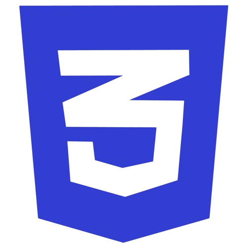
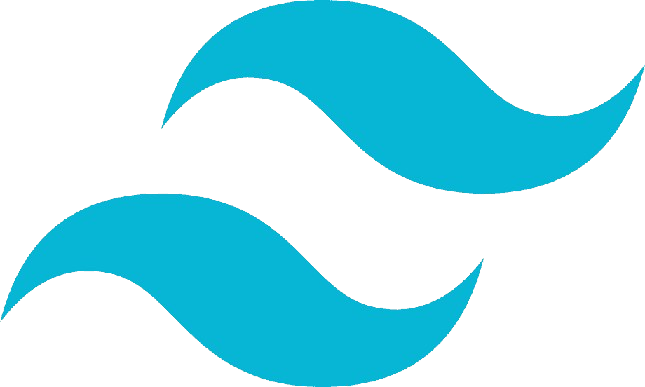
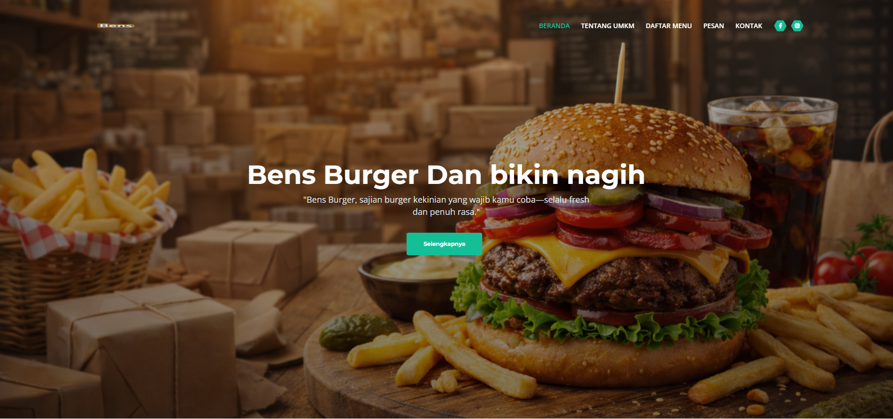
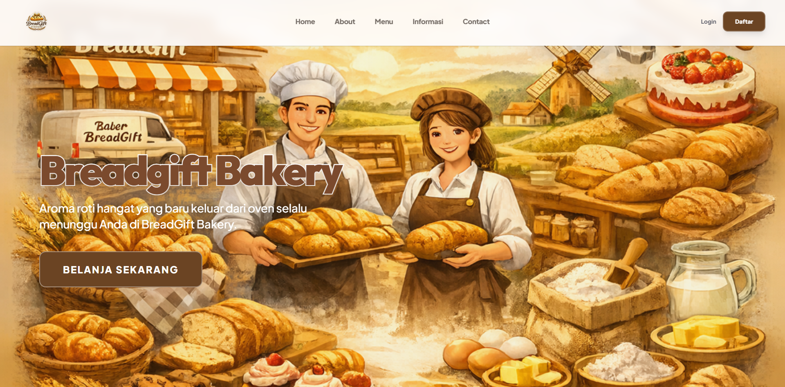
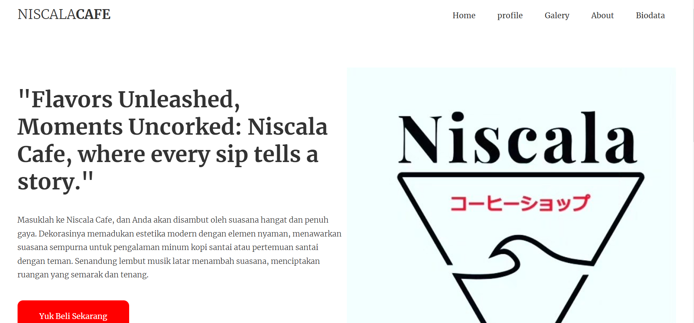

I am an Informatics fresh graduate from Universitas Teknokrat Indonesia with a GPA of 3.54 with a degree in cumlaude, specializing in modern web development, Artificial Intelligence (AI), and cross-platform applications.
Throughout my academic journey, I have built mobile projects with Flutter and Android Studio, full-stack websites with Next.js and React.js, and interactive 3D/AR/VR applications using Unity and Blender. I also possess core competencies in machine learning, data analysis, computer networking, and hardware/software troubleshooting.
Although I am a fresh graduate without formal industry experience, my hands-on portfolio of projects and a collection of 25 professional IT certifications demonstrate my ability to learn rapidly, integrate databases, and solve complex technical challenges.
Recent Informatics freshgraduate equipped with solid software development fundamentals and a drive to learn.
Experienced in building cross-platform mobile apps with Flutter and responsive frontend designs.
Building foundations in React.js, Next.js, and modern styling libraries like Tailwind CSS.
Creating immersive 3D models and interactive environment assets using Unity 3D and Blender.
Designing detailed user flows, wireframes, and clickable high-fidelity prototypes using Figma.
Holding 25 professional certifications spanning software engineering, AI, systems, and UX design.
Prepared to learn from a professional team, adapt to modern workflows, and contribute with dedication.
Web Structure

CSSWeb Styling
Web Interactivity
Backend Logic
Database Querying

TAILWINDCSS Framework
Frontend Library
React Framework
Version Control
Mobile Framework
 PYTHON
PYTHON
Programming Language
Aplikasi titip beli barang berbasis mobile “Jastipin” dengan segala kepraktisannya, memfasilitasi koneksi kurir dengan pengguna, memungkinkan mengguna mencari barang yang diinginkan, mengetahui harga dan lokasi, serta memesan melalui aplikasi tersebut. Dan penyedia jasa bertugas membeli dan mengirimkan barang dengan biaya jasa.

Aplikasi pemesanan tiket wisata berbasis mobile untuk Lembah Hijau. Memudahkan pengguna memesan tiket masuk, mengecek ketersediaan tiket, melihat informasi wahana secara langsung, dan mendapatkan tiket digital.
Aplikasi edukasi buah-buahan berbasis Augmented Reality (AR) dan Virtual Reality (VR) dengan model 3D interaktif. Membantu pengguna, khususnya anak-anak, mengenali jenis buah, visualisasi 3D, serta informasi gizi secara imersif.

A visually stunning cafe website designed to introduce premium burger products, manage promotions, and facilitate seamless customer orders.

A elegant digital storefront built for a boutique bakery and custom gift provider, featuring premium UI layouts and catalog exploration.

An engaging educational web game where players save marine life by collecting waste and cleaning up a polluted ocean ecosystem.

A modern, interactive web portal designed with a clean aesthetic, custom layout animations, and smooth navigation structure.

An interactive academic project exhibiting fundamental front-end programming, responsive UI layouts, and user inputs validation.

A creative showcase of detailed 3D models, textures, and environment designs sculpted for immersive game experiences.

A comprehensive user experience design project featuring wireframes, style guides, and clickable prototypes developed in Figma.
Awarded to team VICTORY at Gebyar Mahasiswa FTIK 2024, Universitas Teknokrat Indonesia.
Fundamentals and core theories of Artificial Intelligence systems.
Core artificial intelligence implementation techniques.
Mathematical models and linear formulas in ML algorithms.
Data processing, analytics methodologies, and data visualization tools.
Search engine algorithms, text indexing, and information extraction.
Advanced search index optimization, ranking evaluation, and queries parsing.
Fundamental concepts, processes, and life cycle of software engineering.
Front-end and responsive design proficiency for modern web apps.
Architecture and APIs designs with service-oriented models.
Project scope management, sprint planning, and software delivery workflows.
Architecture of distributed nodes and high-performance computing.
Hardware structures, instruction sets, and CPU functions.
Core practices in cryptography, networking defense, and data protection.
Principles of digital privacy and data protection regulation.
Core logical principles, truth tables, and Boolean algebra foundations.
Concepts of database management, data flows, and system integration.
Research, wireframing, and user-experience prototyping principles.
Advanced UI prototyping and feedback validation architectures.
Interactive mechanics, gameplay planning, and logic creation.
Comprehensive game architectures, engines and physics pipelines.
Transitions, overlays, color grading, and timing dynamics.
Building and managing startup ventures in the digital economy.
Campus introduction and community orientation milestone.
Overview of Web3, digital spaces, and Metaverse 101.